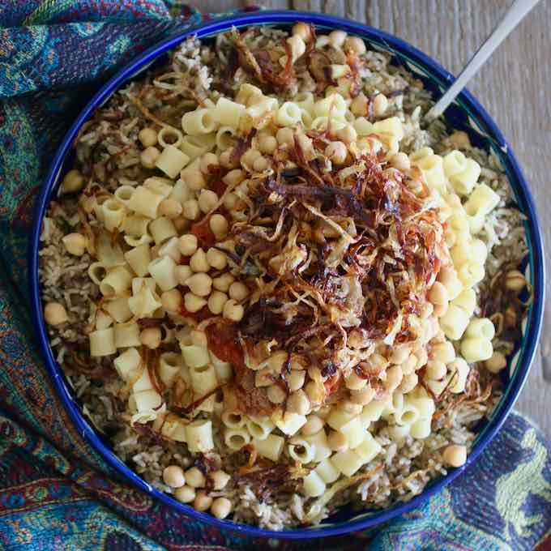

Cutural facts
Some cultural facts that are very important in Egypt are their strong family values and their religion. Most of the citizens in Egypt are Sunni Muslims and the rest are Jewish or Christians. They are very focused on being helpful and polite people because that is what they practice in witin their religion. They fast a lot during the month of Ramadan and are only allowed to work for six hours each day. The women in this country are expected to be conservative and modest as well. Also, film, jouralism, music, and art are significant in their day to day culture.
- Languages
- Egyptian Arabic
- Sa'idi Arabic
Food
- Popular foods in Egypt
- Koshari- is a comforting bowl of simple pantry staples: spiced lentils and rice, combined with chickpeas and small pasta. 
- Mahshi- which is the stuffing made of rice, seasoned with crushed red tomatoes, onion, parsley, dill, salt, pepper and spices, then to be put inside some vegetables after being cored like green bell peppers, eggplants, zucchini, tomatoes, or grape and cabbage leaves.
- Ful Medames & Ta'ameya- which is made of mashed fava beans that are slowly cooked all night in a giant metal jug called Qedra to be rich melted
- Hawawshi- which is spiced minced meat and onions is filling the interior of the Arabic bread wrapping before it was baked in a wood oven.
- Shish Kabab & Kofta- which is juicy chunks of seasoned beef cooked over coals on a skewer. It is generally made of lamb but there are also versions with beef or veal.
Current Events
Tourist Spots
- Best Places To Go While Visiting Egypt
- White Desert
- Islamic Cario
- Pyramids of Gira
- Nile River Cruise
- Egyptian Museum
Average Travel Pricing
- An average cost for two people
- $349- and this includes meals and hotel for one week
- Average flight Cost
- Cairo-$622
- Aswan-$1,142
- Sharm El-Sheikh-$1,050